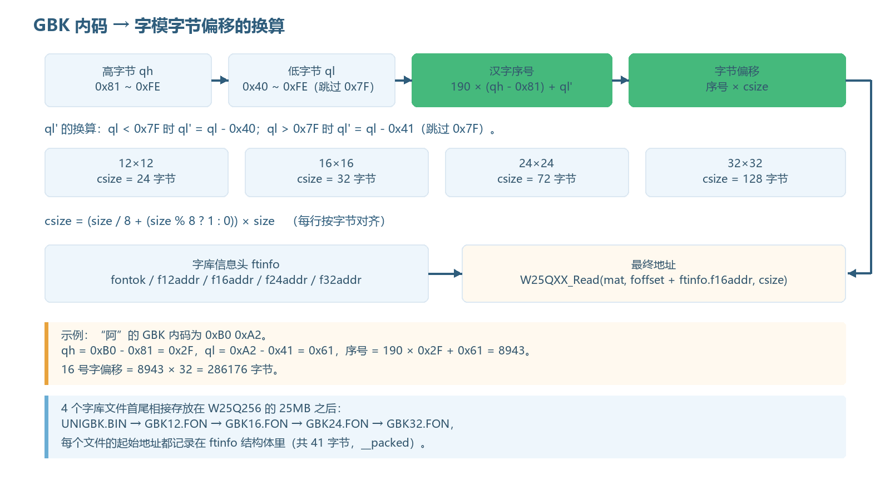
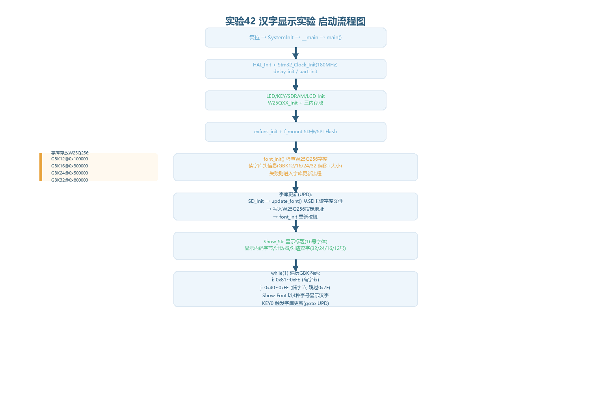
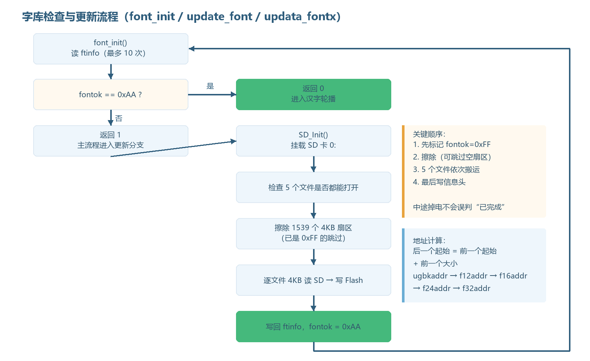
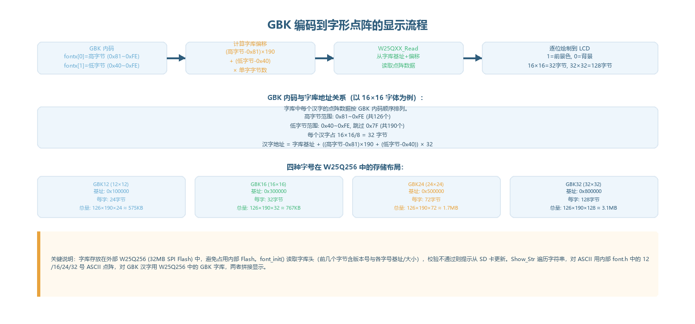
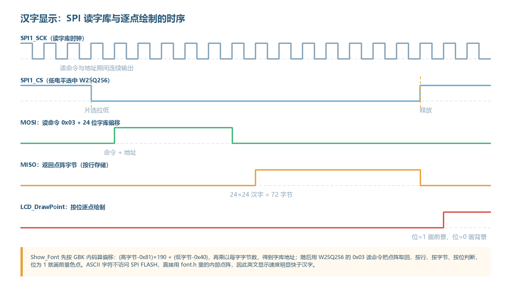

01 实验目标与依赖资源
前面几个实验解决了“块设备读写”和“文件系统”，本实验解决“中文怎么显示”。STM32 内部 Flash 装不下 GBK 全部汉字点阵（四个字号合计约 6MB），所以工程的做法是：字库文件放在 SD 卡的 /SYSTEM/FONT/ 目录，第一次上电时通过 FATFS 读出来，写进 W25Q256 的 25MB 之后区域；之后每次上电只读 W25Q256，不再依赖 SD 卡。
| 资源 | 在本实验中的角色 | 关键代码 / 地址 |
|---|---|---|
| SD 卡 | 字库文件的来源，FATFS 卷 0: | SD_Init() + f_mount(fs[0],"0:",1) |
| W25Q256 | 字库的最终存放地，前 25MB 给 FATFS 卷 1: | FONTINFOADDR = 1024*1024*25 |
| 外部 SDRAM | 外部内存池，供 mymalloc(SRAMEX,…) 使用 | SDRAM_Init()，MEM2_MAX_SIZE = 28912*1024 |
| LCD（LTDC） | 汉字最终显示的位置 | LCD_Init()、LCD_Fast_DrawPoint() |
| 内部 SRAM / CCM | 内部内存池与 CCM 内存池 | MEM1_MAX_SIZE = 160*1024、MEM3_MAX_SIZE = 60*1024 |
字库共 5 个文件：UNIGBK.BIN（Unicode 与 GBK 的转换表）、GBK12.FON、GBK16.FON、GBK24.FON、GBK32.FON。源码注释给出总大小 6302984 字节，按 4KB 一个扇区算占 1539 个扇区，这就是 FONTSECSIZE 的来历。
- 为什么不能放内部 Flash：STM32F429 的片内 Flash 只有 1MB 左右，四个字号 GBK 点阵合计 6MB，物理上放不下。
- 为什么不每次从 SD 卡读：SD 卡可能被拔走，而且随机读一个字模要走 FATFS 的簇链查找，速度远慢于直接读 SPI Flash 的连续地址。
- 为什么起始地址是 25MB：W25Q256 共 32MB，前 25MB 已经被 FATFS 卷
1:占用，字库只能放在 25MB 之后，二者互不覆盖。 - 为什么要有
ftinfo：它是字库的“目录”，记录每个字号在 Flash 中的起始地址与长度；fontok==0xAA表示字库已经就绪，否则必须重新更新。
02 GBK 编码与字库布局
GBK 用两个字节表示一个汉字：高字节（区码）范围 0x81~0xFE，低字节（位码）范围 0x40~0xFE 且跳过 0x7F。每个区固定 190 个汉字，所以“第几个汉字”可以用 190 × (高字节 - 0x81) + (低字节换算值) 算出来，再乘以单个字模的字节数，就得到文件内的偏移。

| 文件 | 字号 | 单字模字节数 csize | 在 W25Q256 中的起始地址 |
|---|---|---|---|
UNIGBK.BIN | 转换表 | — | ftinfo.ugbkaddr = FONTINFOADDR + sizeof(ftinfo) |
GBK12.FON | 12×12 | (12/8+1)*12 = 24 | ftinfo.f12addr |
GBK16.FON | 16×16 | (16/8)*16 = 32 | ftinfo.f16addr |
GBK24.FON | 24×24 | (24/8)*24 = 72 | ftinfo.f24addr |
GBK32.FON | 32×32 | (32/8)*32 = 128 | ftinfo.f32addr |
// 字库信息结构体：保存 5 个文件在 Flash 中的地址与大小
__packed typedef struct
{
u8 fontok; // 0xAA：字库正常；其他：字库不存在
u32 ugbkaddr; // UNIGBK 的起始地址
u32 ugbksize; // UNIGBK 的大小
u32 f12addr; // GBK12 起始地址
u32 gbk12size; // GBK12 大小
u32 f16addr; // GBK16 起始地址
u32 gbk16size;
u32 f24addr;
u32 gbk24size;
u32 f32addr;
u32 gbk32size;
}_font_info;
// 字库文件在 SD 卡中的路径（调用时前面拼上 "0:"）
u8* const GBK_PATH[5] =
{
"/SYSTEM/FONT/UNIGBK.BIN", // Unicode 与 GBK 的转换表
"/SYSTEM/FONT/GBK12.FON", // 12×12 点阵
"/SYSTEM/FONT/GBK16.FON",
"/SYSTEM/FONT/GBK24.FON",
"/SYSTEM/FONT/GBK32.FON",
};
- 为什么每个区是 190 个字：低字节从
0x40到0xFE共 191 个值，其中0x7F不可用，实际 190 个，代码里就用190*qh+ql。 - 低字节为什么要分两种减：
ql<0x7F时减0x40；ql>0x7F时减0x41，因为中间那个0x7F要跳过，不减 0x41 会整体错位一个字。 csize为什么向上取整：点阵每行按字节对齐，12 点宽需要(12+7)/8 = 2字节，所以 12 号字每行 2 字节、共 12 行 = 24 字节。__packed的作用：结构体要原样写进 Flash 再原样读回，必须紧凑排列（共 41 字节），否则编译器插入的对齐填充会让地址与大小对不上。
03 启动流程总览

整个启动过程可以概括为四段：内核与时钟（HAL_Init、Stm32_Clock_Init）→ 基础外设（delay、串口、LED、按键）→ 存储与显示（SDRAM、LCD、W25Q256、三个内存池、FATFS）→ 字库检查（font_init() 为 0 才进入正常显示，否则跳去更新）。
int main(void)
{
u32 fontcnt;
u8 i, j;
u8 fontx[2]; // gbk 码：fontx[0] 高字节，fontx[1] 低字节
u8 key, t;
HAL_Init(); // 初始化 HAL 库：SysTick、NVIC 分组
Stm32_Clock_Init(360, 25, 2, 8); // PLLN=360, PLLM=25, PLLP=2, PLLQ=8 → 180MHz
delay_init(180); // 用 180MHz 作为延时基准
uart_init(115200); // USART1，PA9/PA10
LED_Init(); // DS0=PB1，DS1=PB0
KEY_Init(); // KEY0=PH3 等
SDRAM_Init(); // 外部 SDRAM，供内存池与 LCD 帧缓存使用
LCD_Init(); // LTDC 屏初始化，确定分辨率与像素格式
W25QXX_Init(); // SPI5 + PF6 片选，读 ID 并进入 4 字节地址模式
my_mem_init(SRAMIN); // 内部 SRAM 内存池（160KB）
my_mem_init(SRAMEX); // 外部 SDRAM 内存池（28912KB）
my_mem_init(SRAMCCM); // CCM 内存池（60KB，仅 CPU 可访问）
exfuns_init(); // 为 FATFS 相关指针申请内存
f_mount(fs[0], "0:", 1); // 挂载 SD 卡
f_mount(fs[1], "1:", 1); // 挂载 SPI FLASH
while (font_init()) // 0：字库完好；非 0：字库丢失
{
UPD:
LCD_Clear(WHITE); // 清屏，准备显示更新提示
POINT_COLOR = RED;
LCD_ShowString(30, 50, 200, 16, 16, "Apollo STM32F4/F7");
while (SD_Init()) // 0：SD 卡就绪；非 0：初始化失败
{
LCD_ShowString(30, 70, 200, 16, 16, "SD Card Failed!");
delay_ms(200);
LCD_Fill(30, 70, 230, 86, WHITE); // 闪烁提示
delay_ms(200);
}
LCD_ShowString(30, 70, 200, 16, 16, "SD Card OK");
LCD_ShowString(30, 90, 200, 16, 16, "Font Updating...");
key = update_font(20, 110, 16, "0:"); // 从 SD 卡 0: 更新全部字库
while (key) // 非 0：更新失败，闪屏重试
{
LCD_ShowString(30, 110, 200, 16, 16, "Font Update Failed!");
delay_ms(200);
LCD_Fill(20, 110, 220, 126, WHITE);
delay_ms(200);
}
LCD_ShowString(30, 110, 200, 16, 16, "Font Update Success! ");
delay_ms(1500);
LCD_Clear(WHITE);
}
POINT_COLOR = RED;
Show_Str(30, 30, 200, 16, "阿波罗STM32F4/F7开发板", 16, 0);
Show_Str(30, 50, 200, 16, "GBK字库测试程序", 16, 0);
Show_Str(30, 70, 200, 16, "正点原子@ALIENTEK", 16, 0);
Show_Str(30, 90, 200, 16, "2016年1月16日", 16, 0);
Show_Str(30, 110, 200, 16, "按KEY0,更新字库", 16, 0);
POINT_COLOR = BLUE;
Show_Str(30, 130, 200, 16, "内码高字节:", 16, 0);
Show_Str(30, 150, 200, 16, "内码低字节:", 16, 0);
Show_Str(30, 170, 200, 16, "汉字计数器:", 16, 0);
Show_Str(30, 200, 200, 32, "对应汉字为:", 32, 0);
Show_Str(30, 232, 200, 24, "对应汉字为:", 24, 0);
Show_Str(30, 256, 200, 16, "对应汉字(16*16)为:", 16, 0);
Show_Str(30, 272, 200, 12, "对应汉字(12*12)为:", 12, 0);
while (1)
{
fontcnt = 0;
for (i = 0x81; i < 0xff; i++) // 遍历 GBK 高字节
{
fontx[0] = i;
LCD_ShowNum(118, 150, i, 3, 16); // 显示内码高字节
for (j = 0x40; j < 0xfe; j++) // 遍历 GBK 低字节
{
if (j == 0x7f) continue; // 0x7F 不是有效汉字
fontcnt++;
LCD_ShowNum(118, 150, j, 3, 16); // 显示内码低字节
LCD_ShowNum(118, 170, fontcnt, 5, 16); // 汉字计数器
fontx[1] = j;
Show_Font(206, 200, fontx, 32, 0); // 30+176
Show_Font(162, 232, fontx, 24, 0); // 30+132
Show_Font(174, 256, fontx, 16, 0); // 30+144
Show_Font(138, 272, fontx, 12, 0); // 30+108
t = 200;
while (t--) // 延时 200ms，同时扫描按键
{
delay_ms(1);
key = KEY_Scan(0);
if (key == KEY0_PRES) goto UPD; // KEY0 触发字库更新
}
LED0 = !LED0; // 每换一个汉字翻转一次 DS0
}
}
}
}
- 为什么
font_init()写在while里：它的返回值 0 表示“字库完好”，非 0 表示“需要更新”；只有更新成功后再次检查为 0 才会跳出循环，形成“检查—更新—再检查”的闭环。 goto UPD为什么要跳到循环内部：UPD 标签位于while循环体开头，跳过去相当于“立即重新执行一次更新”，避免重复写一遍更新代码。- 两次
f_mount的顺序：先挂 SD 卡（字库来源），再挂 SPI FLASH（字库去处）；f_mount的第 3 参数 1 表示“立即挂载”，0 表示“延迟到第一次访问”。 - 四种字号同屏显示：200/232/256/272 四行分别用 32/24/16/12 号字，x 坐标按
30+字宽偏移手工错开，保证左边界对齐文字标签。
04 启动文件与向量表
工程使用 MDK 版本的 startup_stm32f429xx.s。它定义栈 Stack_Size = 0x400（1KB）、堆 Heap_Size = 0x200（512B），并建立向量表：第 0 项是初始栈顶 __initial_sp，第 1 项是 Reset_Handler。复位后硬件自动取这两项，PC 跳到 Reset_Handler。
Stack_Size EQU 0x400 ; 栈 1KB，中断嵌套与局部数组都在这里 AREA STACK, NOINIT, READWRITE, ALIGN=3 Stack_Mem SPACE Stack_Size __initial_sp ; 向量表第 0 项：初始栈顶 Heap_Size EQU 0x200 ; 堆 512B，只给 C 库 malloc 用（本工程用 mymalloc） AREA HEAP, NOINIT, READWRITE, ALIGN=3 __heap_base Heap_Mem SPACE Heap_Size __heap_limit __Vectors DCD __initial_sp ; 0x0000 0000 初始 MSP DCD Reset_Handler ; 0x0000 0004 复位入口 DCD NMI_Handler DCD HardFault_Handler ... DCD SysTick_Handler ; 内核异常 15：1ms 时基 ; External Interrupts DCD TIM4_IRQHandler ; 外部中断 30 DCD SPI1_IRQHandler DCD USART1_IRQHandler ; 外部中断 37 Reset_Handler PROC EXPORT Reset_Handler [WEAK] IMPORT SystemInit IMPORT __main LDR R0, =SystemInit ; 先跑 SystemInit（时钟、向量表偏移） BLX R0 LDR R0, =__main ; 再进 C 库：初始化 RW/ZI 段后调用 main BX R0 ENDP
- 为什么向量表第 0 项是栈顶而不是函数：Cortex-M4 复位时硬件从地址 0 取 MSP 初值、从地址 4 取 PC 初值，这是内核规定，不是软件约定。
[WEAK]的意义：启动文件给每个中断都定义了“弱符号”死循环版本，只要stm32f4xx_it.c或usart.c里出现同名强符号，链接时就会覆盖它。- 为什么本工程只需要 SysTick 与 USART1：汉字显示只用 SPI 查询、FMC 查询、SDIO 查询，没有任何外设靠中断搬运数据，
stm32f4xx_it.c里实际只有SysTick_Handler，USART1 的 ISR 写在usart.c。 - 堆为什么可以很小：工程所有动态内存都走
mymalloc管理的大数组池，标准库malloc基本不用，512B 堆只是为了让 C 库链接通过。
05 SystemInit 与 HAL_Init
SystemInit() 由启动文件调用，做两件事：把 SCB->VTOR 指向向量表基址、打开 FPU（CPACR 的 CP10/CP11）。真正的 180MHz 时钟并不在这里设置，而是 main 里的 Stm32_Clock_Init() 完成。随后 HAL_Init() 把 SysTick 配成 1ms 中断，并设置 NVIC 优先级分组为 4 位抢占、0 位子优先级。
// system_stm32f4xx.c
void SystemInit(void)
{
RCC->CR |= (uint32_t)0x00000001; // 打开 HSION
RCC->CFGR = 0x00000000; // 复位时钟配置
RCC->CR &= (uint32_t)0xFEF6FFFF; // 关闭 PLL、CSS、HSEON
RCC->PLLCFGR = 0x24003010;
RCC->CR &= ~(1 << 18); // 关闭 HSE Bypass
RCC->CIR = 0x00000000; // 清中断标志
#ifdef VECT_TAB_SRAM
SCB->VTOR = SRAM_BASE | VECT_TAB_OFFSET; // 向量表放 SRAM
#else
SCB->VTOR = FLASH_BASE | VECT_TAB_OFFSET; // 向量表放 Flash 0x08000000
#endif
SCB->CPACR |= ((3UL << 10*2) | (3UL << 11*2)); // 使能 FPU（CP10/CP11）
}
// stm32f4xx_hal.c（节选）
HAL_StatusTypeDef HAL_Init(void)
{
HAL_NVIC_SetPriorityGrouping(NVIC_PRIORITYGROUP_4); // 4 位抢占优先级
HAL_InitTick(TICK_INT_PRIORITY); // SysTick 1ms，优先级 0x0F
HAL_MspInit(); // 底层初始化（本工程为空实现）
return HAL_OK;
}
- 为什么
SystemInit里不配 180MHz：它是 ST 提供的通用模板，只保证内核处于可控状态；板级时钟由正点原子的Stm32_Clock_Init负责，便于换晶振时只改一处。 - 为什么要开 FPU：
fupd_prog里用float prog计算百分比，不开 FPU 会走软件浮点，速度慢且占用栈。 HAL_InitTick的优先级 0x0F：SysTick 设为最低抢占优先级，保证串口等外设中断不会被 1ms 时基打断。- 本工程
HAL_MspInit是空的：没有需要 HAL 统一打开的全局外设时钟，各驱动自己在MspInit里开对应 GPIO/RCC 时钟。
06 时钟树与延时基准
开发板晶振 25MHz，Stm32_Clock_Init(360,25,2,8) 的四个参数依次是 PLLN / PLLM / PLLP / PLLQ：VCO 输入 25/25 = 1MHz，VCO 输出 1×360 = 360MHz，SYSCLK 360/2 = 180MHz，PLL48CK 360/8 = 45MHz。
| 时钟 | 来源与分频 | 频率 | 用途 |
|---|---|---|---|
| SYSCLK | PLL VCO 360MHz ÷ PLLP=2 | 180MHz | 内核、SysTick |
| HCLK | SYSCLK ÷ AHB 预分频=1 | 180MHz | FMC、DMA、内核总线 |
| PCLK1 | HCLK ÷ 4 | 45MHz | APB1 外设 |
| PCLK2 | HCLK ÷ 2 | 90MHz | APB2 外设（SPI5 挂 APB2） |
| PLL48CK | PLL VCO ÷ PLLQ=8 | 45MHz | SDIO 时钟源 |
| SDRAM SDCLK | HCLK ÷ 2 | 90MHz | 外部 SDRAM |
// main 中的调用 Stm32_Clock_Init(360, 25, 2, 8); // 180MHz，PLL48CK=45MHz delay_init(180); // 告诉延时函数每次 SysTick 是 1/180 微秒 // delay.c void delay_init(u8 SYSCLK) { HAL_SYSTICK_CLKSourceConfig(SYSTICK_CLKSOURCE_HCLK); // SysTick 用 HCLK fac_us = SYSCLK; // 1us 需要的 SysTick 计数 = 180 fac_ms = (u16)SYSCLK * 1000; // 1ms = 180000 } void delay_us(u32 nus) { u32 ticks = nus * fac_us; // 折算成 SysTick 计数 u32 told = SysTick->VAL, tnow, tcnt = 0; while (1) { tnow = SysTick->VAL; if (tnow != told) { if (tnow < told) tcnt += told - tnow; // 未跨过重装值 else tcnt += SysTick->LOAD - tnow + told; // 跨过重装值 told = tnow; if (tcnt >= ticks) break; // 计满即退出 } } }
- 为什么 FLASH 要等 5 个周期：180MHz 下 CPU 取指速度远超 Flash，HAL 在
Stm32_Clock_Init里设置FLASH_LATENCY_5并打开 OverDrive，否则读 Flash 会取到错误指令。 - 为什么
delay_us直接读SysTick->VAL：不占用中断、不依赖HAL_Delay的 1ms 粒度，能实现微秒级短延时（SDRAM 初始化就需要 500us）。 - 为什么要注意重装值：SysTick 是递减计数器，减到 0 会自动重装
LOAD，所以计数要分“未跨零”和“跨零”两种情况累加。 - 45MHz 的 PLL48CK 有什么用：SDIO 的卡时钟由它分频得到，
SDIO_INIT_CLK_DIV分频后初始化阶段约 375kHz，识别完成后切到 22.5MHz。
07 外设与内存池初始化
这一串初始化有严格顺序：先 SDRAM（后面 my_mem_init(SRAMEX) 要用它），再 LCD（LTDC 需要 SDRAM 做帧缓存），再 W25Q256（字库载体），最后才是三个内存池和 FATFS。顺序颠倒会出现“内存池指向未初始化的 SDRAM”这类隐蔽问题。
SDRAM_Init(); // FMC Bank5：9 位列、13 位行、16 位数据、CAS=3 LCD_Init(); // 先读面板 ID，RGB 屏走 LTDC 分支 W25QXX_Init(); // SPI5 + PF6 片选；W25Q256 需切换到 4 字节地址模式 my_mem_init(SRAMIN); // 内部 SRAM 池：块 64B，共 160KB my_mem_init(SRAMEX); // 外部 SDRAM 池：块 64B，共 28912KB my_mem_init(SRAMCCM); // CCM 池：块 64B，共 60KB，仅 CPU 可访问 exfuns_init(); // 申请 FATFS 用到的 FIL/FATFS 指针 f_mount(fs[0], "0:", 1); // 挂载 SD 卡 f_mount(fs[1], "1:", 1); // 挂载 SPI FLASH（字库的最终存放地） // malloc.c：内存池初始化（以内部池为例） void my_mem_init(u8 memx) { mymemset(mallco_dev.memrdy[memx], 0, memtblsize[memx]); // 分配表清零 mymemset(mallco_dev.membase[memx], 0, memsize[memx]); // 内存池清零 mallco_dev.memrdy[memx] = 1; // 标记已初始化 } // malloc.c：内存分配（首次适配） void *mymalloc(u8 memx, u32 size) { signed long offset; u32 nmemb, cmemb = 0, i; if (!mallco_dev.memrdy[memx]) mallco_dev.init(memx); // 未初始化则先初始化 if (size == 0) return NULL; nmemb = size / memblksize[memx]; // 需要多少个 64B 块 if (size % memblksize[memx]) nmemb++; for (offset = memtblsize[memx] - 1; offset >= 0; offset--) { if (!mallco_dev.memmap[memx][offset]) cmemb++; // 连续空闲块计数 else cmemb = 0; if (cmemb == nmemb) // 找到足够连续块 { for (i = 0; i < nmemb; i++) mallco_dev.memmap[memx][offset + i] = nmemb; return (void *)((offset * memblksize[memx]) + (u32)mallco_dev.membase[memx]); } } return NULL; // 没有足够空间 }
- 为什么 SDRAM 必须最先：
my_mem_init(SRAMEX)里的mymemset会直接写 SDRAM 地址空间，SDRAM 控制器没初始化时写进去的数据会丢失甚至触发总线错误。 - 为什么 LCD 在 SDRAM 之后：RGB 屏的显存在 SDRAM 中，LTDC 初始化时要告诉控制器帧缓存地址，地址空间必须先可用。
- 内存池用“块”而不是字节：64B 一块、分配表记录每块被谁占用，实现简单、碎片可控；代价是 1 字节的申请也要占 64B。
- 字库更新为什么要 4KB 缓冲：
update_font申请 4096 字节的buf用于整扇区读取校验，正好等于 W25Q256 一个扇区。
08 字库检查与更新

font_init() 只做一件事：从 FONTINFOADDR 读出 ftinfo 结构体，看 fontok 是否等于 0xAA。为了避免 SPI 偶发读错，它连续读 10 次，任意一次成功就认为字库完好。若 10 次都失败，返回 1，主流程进入更新分支。
u8 font_init(void)
{
u8 t = 0;
W25QXX_Init(); // 重新初始化 SPI FLASH，防止引脚状态异常
while (t < 10) // 连续读 10 次，容忍偶发错误
{
t++;
W25QXX_Read((u8 *)&ftinfo, FONTINFOADDR, sizeof(ftinfo)); // 读字库信息头（41 字节）
if (ftinfo.fontok == 0XAA) break; // 标志正确，字库可用
delay_ms(20);
}
if (ftinfo.fontok != 0XAA) return 1; // 确实没有字库
return 0; // 字库完好
}
u8 update_font(u16 x, u16 y, u8 size, u8 *src)
{
u8 *pname;
u32 *buf;
u8 res = 0, rval = 0;
u16 i, j;
FIL *fftemp;
res = 0XFF;
ftinfo.fontok = 0XFF; // 先标记“无效”，防止中途掉电被误判为有效
pname = mymalloc(SRAMIN, 100); // 拼路径用，100 字节足够
buf = mymalloc(SRAMIN, 4096); // 整扇区校验缓冲
fftemp = (FIL *)mymalloc(SRAMIN, sizeof(FIL));
if (buf == NULL || pname == NULL || fftemp == NULL)
{
myfree(SRAMIN, fftemp); myfree(SRAMIN, pname); myfree(SRAMIN, buf);
return 5; // 内存申请失败
}
for (i = 0; i < 5; i++) // 先确认 5 个字库文件都在
{
strcpy((char *)pname, (char *)src); // "0:"
strcat((char *)pname, (char *)GBK_PATH[i]); // 追加 /SYSTEM/FONT/xxx
res = f_open(fftemp, (const TCHAR *)pname, FA_READ);
if (res) { rval |= 1 << 7; break; } // 打开失败，置错误标志
}
myfree(SRAMIN, fftemp);
if (rval == 0) // 文件齐全，开始搬
{
LCD_ShowString(x, y, 240, 320, size, "Erasing sectors... ");
for (i = 0; i < FONTSECSIZE; i++) // 1539 个 4KB 扇区
{
fupd_prog(x + 20 * size / 2, y, size, FONTSECSIZE, i); // 更新进度条
W25QXX_Read((u8 *)buf, ((FONTINFOADDR / 4096) + i) * 4096, 4096);
for (j = 0; j < 1024; j++) // 用 32 位字判断是否全 0xFF
{
if (buf[j] != 0XFFFFFFFF) break; // 有非空数据，需要擦除
}
if (j != 1024) W25QXX_Erase_Sector((FONTINFOADDR / 4096) + i);
}
for (i = 0; i < 5; i++) // 依次搬 5 个文件
{
LCD_ShowString(x, y, 240, 320, size, UPDATE_REMIND_TBL[i]);
strcpy((char *)pname, (char *)src);
strcat((char *)pname, (char *)GBK_PATH[i]);
res = updata_fontx(x + 20 * size / 2, y, size, pname, i);
if (res) { myfree(SRAMIN, buf); myfree(SRAMIN, pname); return 1 + i; }
}
ftinfo.fontok = 0XAA; // 全部成功，写有效标志
W25QXX_Write((u8 *)&ftinfo, FONTINFOADDR, sizeof(ftinfo)); // 保存信息头
}
myfree(SRAMIN, pname);
myfree(SRAMIN, buf);
return rval;
}
// 搬运单个字库文件：按 4KB 分块读 SD 卡、写 SPI FLASH
u8 updata_fontx(u16 x, u16 y, u8 size, u8 *fxpath, u8 fx)
{
u32 flashaddr = 0, offx = 0;
FIL *fftemp;
u8 *tempbuf;
u8 res, rval = 0;
u16 bread;
fftemp = (FIL *)mymalloc(SRAMIN, sizeof(FIL));
tempbuf = mymalloc(SRAMIN, 4096); // 一次 4KB，和 Flash 扇区对齐
if (fftemp == NULL) rval = 1;
if (tempbuf == NULL) rval = 1;
res = f_open(fftemp, (const TCHAR *)fxpath, FA_READ);
if (res) rval = 2; // 打开失败
if (rval == 0)
{
switch (fx) // 计算该文件在 Flash 中的起始地址
{
case 0: // UNIGBK.BIN
ftinfo.ugbkaddr = FONTINFOADDR + sizeof(ftinfo);
ftinfo.ugbksize = fftemp->obj.objsize;
flashaddr = ftinfo.ugbkaddr;
break;
case 1: // GBK12
ftinfo.f12addr = ftinfo.ugbkaddr + ftinfo.ugbksize;
ftinfo.gbk12size = fftemp->obj.objsize;
flashaddr = ftinfo.f12addr;
break;
case 2:
ftinfo.f16addr = ftinfo.f12addr + ftinfo.gbk12size;
ftinfo.gbk16size = fftemp->obj.objsize;
flashaddr = ftinfo.f16addr;
break;
case 3:
ftinfo.f24addr = ftinfo.f16addr + ftinfo.gbk16size;
ftinfo.gbk24size = fftemp->obj.objsize;
flashaddr = ftinfo.f24addr;
break;
case 4:
ftinfo.f32addr = ftinfo.f24addr + ftinfo.gbk24size;
ftinfo.gbk32size = fftemp->obj.objsize;
flashaddr = ftinfo.f32addr;
break;
}
while (res == FR_OK)
{
res = f_read(fftemp, tempbuf, 4096, (UINT *)&bread); // 从 SD 卡读 4KB
if (res != FR_OK) break;
W25QXX_Write(tempbuf, offx + flashaddr, 4096); // 写入 Flash（内部带擦除）
offx += bread;
fupd_prog(x, y, size, fftemp->obj.objsize, offx); // 进度显示
if (bread != 4096) break; // 不足 4KB，说明读完了
}
f_close(fftemp);
}
myfree(SRAMIN, fftemp);
myfree(SRAMIN, tempbuf);
return res;
}
updata_fontx的参数：x,y进度显示坐标、size字号、fxpath完整路径、fx文件编号 0~4；返回 0 成功，否则为 FATFS 错误码。- 为什么要先算地址再写：5 个文件在 Flash 中是首尾相接的，后一个的起始地址 = 前一个起始 + 前一个大小，必须先写
ftinfo字段再算flashaddr。 - 为什么擦除前要先读一遍：W25Q256 擦除一次至少 150ms，1539 个扇区全擦要几分钟；先判断是否已经是
0xFFFFFFFF，全空的扇区直接跳过，能省大量时间。 - 为什么最后才写
ftinfo：它相当于“提交记录”，中途掉电时fontok仍是旧值/0xFF，下次上电会重新更新，不会出现“只搬了一半却认为完成”。 fftemp->obj.objsize是什么：FATFS 的FIL结构里记录的文件大小（字节），用它填ugbksize/gbk12size…，不需要额外f_stat。
font_init：0 = 字库完好，1 = 字库缺失。update_font：0 = 成功；5 = 内存申请失败；1+i= 第 i 个字库文件写入失败（1~5）；1<<7置位表示有文件打不开。updata_fontx：返回res，即最后一次f_read的FRESULT；FR_OK为 0。- 为什么
update_font失败要释放内存再返回：这三个缓冲都在内部 SRAM 池里，不释放会一直占着 4KB+，而内部池只有 160KB。
09 中断链路
| 触发源 | NVIC 优先级 | ISR 位置 | 本实验中的作用 |
|---|---|---|---|
| SysTick 1ms | 0x0F（最低） | stm32f4xx_it.c | HAL_IncTick()，供 HAL_Delay 与超时判断 |
| USART1 RXNE | 3/3 | usart.c | 接收调试字符，写入 USART_RX_BUF |
| SPI5 / SDIO / FMC | 未配置 | 无 | 全部查询方式，靠 while 等标志位 |
| TIM4 | 未配置 | 无 | 本实验没有 USMART，不需要 100ms 扫描 |
void SysTick_Handler(void)
{
HAL_IncTick(); // 全局 1ms 计数，uwTick 自增
}
// usart.c：串口接收用状态机拼一帧，必须以 \r\n 结尾
void USART1_IRQHandler(void)
{
u8 Res;
if (__HAL_UART_GET_FLAG(&UART1_Handler, UART_FLAG_RXNE) != RESET)
{
HAL_UART_Receive(&UART1_Handler, &Res, 1, 1000); // 读一个字节
if ((USART_RX_STA & 0x8000) == 0) // 上一帧已处理完
{
if (USART_RX_STA & 0x4000) // 已经收到过 0x0D
{
if (Res != 0x0a) USART_RX_STA = 0; // 不是 0x0A，丢弃重来
else USART_RX_STA |= 0x8000; // 收到 0x0D 0x0A，一帧完成
}
else
{
if (Res == 0x0d) USART_RX_STA |= 0x4000; // 记录收到回车
else
{
USART_RX_BUF[USART_RX_STA & 0X3FFF] = Res; // 存入接收缓冲
USART_RX_STA++;
if (USART_RX_STA > (USART_REC_LEN - 1)) USART_RX_STA = 0; // 防溢出
}
}
}
}
HAL_UART_IRQHandler(&UART1_Handler); // 清标志
}
- 为什么只有两个中断：本实验没有 DMA 搬运、没有 USMART 定时扫描；SD 卡走
SD_DMA_MODE 0查询模式，SPI5 和 FMC 也全是同步轮询。 USART_RX_STA的三段含义：bit15 帧完成、bit14 收到 0x0D、bit13~0 有效字节数，这个约定来自正点原子的串口例程，便于主循环判断“有没有一整行命令”。- 为什么 ISR 里不调用 FATFS：文件操作耗时且不可重入；串口 ISR 只负责收字节，真正的解析和文件操作留在主循环。
- SysTick 优先级最低的影响：更新字库时大量
delay_ms不会阻塞串口接收，调试信息能正常收到。
10 主循环汉字轮播

主循环用 i 遍历高字节 0x81~0xFE、j 遍历低字节 0x40~0xFD 并跳过 0x7F，计数变量 fontcnt 每遇到一个字加一。每个汉字停留约 200ms，期间用 delay_ms(1) 分 200 次扫描按键，这样既不耽误轮播，又能随时响应 KEY0。
while (1)
{
fontcnt = 0;
for (i = 0x81; i < 0xff; i++) // 高字节：GBK 区码
{
fontx[0] = i;
LCD_ShowNum(118, 150, i, 3, 16); // 显示内码高字节（3 位数字）
for (j = 0x40; j < 0xfe; j++) // 低字节：位码
{
if (j == 0x7f) continue; // 0x7F 是保留码位，跳过
fontcnt++;
LCD_ShowNum(118, 150, j, 3, 16); // 显示内码低字节
LCD_ShowNum(118, 170, fontcnt, 5, 16);// 显示已轮播的汉字总数
fontx[1] = j;
Show_Font(206, 200, fontx, 32, 0); // 32×32 点阵
Show_Font(162, 232, fontx, 24, 0); // 24×24 点阵
Show_Font(174, 256, fontx, 16, 0); // 16×16 点阵
Show_Font(138, 272, fontx, 12, 0); // 12×12 点阵
t = 200;
while (t--) // 约 200ms 的“可打断延时”
{
delay_ms(1);
key = KEY_Scan(0); // 0：无按键；KEY0_PRES：KEY0 按下
if (key == KEY0_PRES) goto UPD; // 跳去重新更新字库
}
LED0 = !LED0; // 每次换字翻转 DS0，指示程序在跑
}
}
}
// 静态提示文字（进入循环前显示一次）
Show_Str(30, 130, 200, 16, "内码高字节:", 16, 0);
Show_Str(30, 150, 200, 16, "内码低字节:", 16, 0);
Show_Str(30, 170, 200, 16, "汉字计数器:", 16, 0);
Show_Str(30, 200, 200, 32, "对应汉字为:", 32, 0);
Show_Str(30, 232, 200, 24, "对应汉字为:", 24, 0);
Show_Str(30, 256, 200, 16, "对应汉字(16*16)为:", 16, 0);
Show_Str(30, 272, 200, 12, "对应汉字(12*12)为:", 12, 0);
- 为什么低字节上界是 0xFD：循环条件写的是
j < 0xfe，最后一个有效值是0xFD；0xFE本身是合法的 GBK 位码，但代码沿用了这个边界，属于工程既定行为。 - 为什么用
t=200的短延时循环：单个delay_ms(200)期间无法响应按键，拆成 200 次 1ms 就能每毫秒检查一次 KEY0。 LCD_ShowNum的第五个参数是字号：此处统一用 16 号 ASCII 字体显示数字，与汉字字号无关。- 为什么四个
Show_Font的 x 坐标不同：左侧标签宽度不同，向右错开是为了让汉字左边界与“对应汉字为:”后面的位置对齐。 LED0 = !LED0的观察价值：每个汉字翻转一次，肉眼看到 DS0 高频闪烁就说明字库读取与绘点都在正常工作，没有卡死在某次 SPI 读。
11 点阵提取与逐点绘制

显示一个汉字分两步：取模——根据内码算出该字在 GBKxx.FON 中的偏移，用 W25QXX_Read 读出 csize 字节到栈上数组；绘点——把每个字节按位展开，为 1 画前景色、为 0 画背景色（非叠加模式），一行画满 size 个点后换到下一列。
void Get_HzMat(unsigned char *code, unsigned char *mat, u8 size)
{
unsigned char qh, ql, i;
unsigned long foffset;
u8 csize = (size / 8 + ((size % 8) ? 1 : 0)) * size; // 单字模字节数
qh = *code; // 高字节（区码）
ql = *(++code); // 低字节（位码）
if (qh < 0x81 || ql < 0x40 || ql == 0xff || qh == 0xff) // 非法 GBK 码
{
for (i = 0; i < csize; i++) *mat++ = 0x00; // 填 0，显示为空白格
return;
}
if (ql < 0x7f) ql -= 0x40; // 0x40~0x7E 段
else ql -= 0x41; // 0x80~0xFE 段，跳过 0x7F
qh -= 0x81;
foffset = ((unsigned long)190 * qh + ql) * csize; // 第几个汉字 × 单字字节数
switch (size)
{
case 12: W25QXX_Read(mat, foffset + ftinfo.f12addr, csize); break;
case 16: W25QXX_Read(mat, foffset + ftinfo.f16addr, csize); break;
case 24: W25QXX_Read(mat, foffset + ftinfo.f24addr, csize); break;
case 32: W25QXX_Read(mat, foffset + ftinfo.f32addr, csize); break;
}
}
void Show_Font(u16 x, u16 y, u8 *font, u8 size, u8 mode)
{
u8 temp, t, t1;
u16 y0 = y;
u8 dzk[128]; // 32×32 最大 128 字节
u8 csize = (size / 8 + ((size % 8) ? 1 : 0)) * size;
if (size != 12 && size != 16 && size != 24 && size != 32) return; // 只支持四种字号
Get_HzMat(font, dzk, size); // 先取模到栈上
for (t = 0; t < csize; t++)
{
temp = dzk[t]; // 一个字节 = 8 个像素
for (t1 = 0; t1 < 8; t1++)
{
if (temp & 0x80) LCD_Fast_DrawPoint(x, y, POINT_COLOR); // 位为 1：前景色
else if (mode == 0) LCD_Fast_DrawPoint(x, y, BACK_COLOR); // 非叠加：背景色
temp <<= 1; // 左移取下一位
y++;
if ((y - y0) == size) // 一列画满 size 个点
{
y = y0; // 回到列顶
x++; // 移到下一列
break;
}
}
}
}
void Show_Str(u16 x, u16 y, u16 width, u16 height, u8 *str, u8 size, u8 mode)
{
u16 x0 = x, y0 = y;
u8 bHz = 0; // 0：当前是 ASCII；1：当前是汉字
while (*str != 0)
{
if (!bHz)
{
if (*str > 0x80) bHz = 1; // 最高位为 1，说明是 GBK 汉字首字节
else
{
if (x > (x0 + width - size / 2)) { y += size; x = x0; } // 超出宽度换行
if (y > (y0 + height - size)) break; // 超出高度结束
if (*str == 13) { y += size; x = x0; str++; } // 回车符换行
else LCD_ShowChar(x, y, *str, size, mode); // 画 ASCII 字符
str++;
x += size / 2; // 半角字符宽度是汉字的一半
}
}
else
{
bHz = 0;
if (x > (x0 + width - size)) { y += size; x = x0; } // 汉字换行
if (y > (y0 + height - size)) break;
Show_Font(x, y, str, size, mode); // 画一个汉字
str += 2; // 汉字占两个字节
x += size; // 汉字宽度 = 字号
}
}
}
Get_HzMat的三个参数：code指向 2 字节 GBK 内码、mat是输出缓冲、size是字号；无返回值，非法码时输出全 0 的空白点阵。- 为什么
dzk[128]够用：最大字号 32×32，每行 4 字节、共 32 行，正好 128 字节，这是csize的上限。 - 为什么要判断
size合法性：Show_Str的size由调用者传入，若传 20 这类不支持的值，字库里没有对应文件，读出来是随机数据。 foffset为什么用unsigned long：GBK32 字库大小约 5MB，偏移量超过 16 位，必须用 32 位整型，否则会溢出回绕。
- 位序为什么从
0x80开始：取模软件约定高位在左，每字节最高位对应最左边的像素。 mode=0/1的区别：0 为不透明（背景也画），1 为叠加（只画前景），叠加模式用于在图片上写字。- 字符串里 ASCII 与汉字宽度不同：ASCII 用
x += size/2，汉字用x += size，所以 16 号字下一个汉字占 16 像素、一个字母占 8 像素。 - 为什么
Show_Str要传区域宽高：超宽自动换行、超高停止，避免把内容画到屏幕外造成“看不见”的假故障。
12 串口调试与 printf
工程开启了 #define EN_USART1_RX 1，并在 usart.c 里重写 fputc：把每个字符轮询写进 USART1->DR。这样 printf 不需要任何额外配置就能从 PA9 输出，波特率 115200。
// 避免半主机模式：不使用调试器时也能独立运行
void _sys_exit(int x)
{
x = x;
}
int fputc(int ch, FILE *f)
{
while ((USART1->SR & 0X40) == 0); // 等 TXE 置位，发送寄存器空
USART1->DR = (u8)ch; // 写入数据寄存器
return ch;
}
void uart_init(u32 bound)
{
UART1_Handler.Instance = USART1;
UART1_Handler.Init.BaudRate = bound; // 115200
UART1_Handler.Init.WordLength = UART_WORDLENGTH_8B; // 8 位数据
UART1_Handler.Init.StopBits = UART_STOPBITS_1; // 1 位停止
UART1_Handler.Init.Parity = UART_PARITY_NONE; // 无校验
UART1_Handler.Init.HwFlowCtl = UART_HWCONTROL_NONE; // 无硬件流控
UART1_Handler.Init.Mode = UART_MODE_TX_RX; // 收发
HAL_UART_Init(&UART1_Handler); // 内部会调用 MspInit 配置 PA9/PA10
}
// HAL_UART_MspInit：PA9/PA10 复用为 AF7，并使能 RXNE 中断
__HAL_UART_ENABLE_IT(huart, UART_IT_RXNE);
HAL_NVIC_SetPriority(USART1_IRQn, 3, 3);
HAL_NVIC_EnableIRQ(USART1_IRQn);
- 为什么
while ((USART1->SR & 0X40) == 0)能等到发送完成：SR 的 bit6 是 TXE，发送数据寄存器空时置 1，此时写 DR 不会覆盖未发送的数据。 _sys_exit的作用：不定义它，MDK 会链接半主机相关代码，脱离调试器运行时可能卡在BKPT指令。- 为什么
uart_init里没有HAL_UART_Receive_IT：本工程用直接读 DR 的方式在 ISR 里取字节，没有走 HAL 的回调接收链路。 - 调试建议：若串口无输出，先确认 PA9 是否被复用为 AF7、波特率是否 115200、
EN_USART1_RX是否打开。
13 关键逻辑复盘与排查
| 现象 | 最可能原因 | 定位方法 |
|---|---|---|
| 上电一直显示 “SD Card Failed!” | SD 卡未插好 / 卡未格式化为 FAT | SD_Init() 返回非 0；换卡或重新格式化 |
| 卡在 “Font Updating...” 很久 | 正在擦除 1539 个扇区，属正常现象 | 观察进度百分比是否在增长 |
| 更新后汉字显示为空白格 | 字库文件缺失，或 ftinfo 地址错乱 | Get_HzMat 对非法码会填 0，先查 /SYSTEM/FONT 五个文件 |
| 汉字位置整体错位一个字 | 低字节换算减错（0x40 与 0x41） | 对照 ql<0x7f 分支 |
| 某些字是乱码方块 | 该码位在 GBK 字库中本来就没有字形 | 属于正常现象，字库只覆盖常用汉字 |
| 每次上电都提示更新 | ftinfo.fontok 没写进 Flash，或写保护 | 检查 W25QXX_Write 与 25MB 起始地址 |
// 排查用的最小检查：直接看字库信息头
W25QXX_Read((u8 *)&ftinfo, FONTINFOADDR, sizeof(ftinfo));
printf("fontok = 0x%X\r\n", ftinfo.fontok); // 期望 0xAA
printf("ugbkaddr = 0x%X, size = %d\r\n", ftinfo.ugbkaddr, ftinfo.ugbksize);
printf("f12addr = 0x%X, f16addr = 0x%X\r\n", ftinfo.f12addr, ftinfo.f16addr);
printf("f24addr = 0x%X, f32addr = 0x%X\r\n", ftinfo.f24addr, ftinfo.f32addr);
// 地址关系必须满足：ugbkaddr < f12addr < f16addr < f24addr < f32addr
// 且相邻两个地址之差，等于前一个字库文件的大小
// 手工验证一个字模偏移（以“阿”为例，内码 B0A2）
// qh=0xB0-0x81=0x2F，ql=0xA2-0x41=0x61
// 第几个字 = 190*0x2F + 0x61 = 8943
// 16 号字偏移 = 8943 * 32 = 286176
- 先分层再定位：字库问题看
ftinfo，字体渲染问题看Show_Font，屏的问题看LCD_Init，不要一上来就怀疑取模公式。 - 地址链是自洽性检查的关键：只要打印出 5 个地址，比一下“前一个地址 + 前一个大小 == 后一个地址”，就能判断
ftinfo是否被写坏。 - 为什么“空白格”不是崩溃：
Get_HzMat对非法码主动填 0，这是容错设计，程序会继续跑，只是显示空白。 - 更新耗时的来源：6MB 数据经 SPI 写入，再叠加扇区擦除（每扇区 150ms 级），首次更新几十秒到数分钟都属正常。
14 交互演示
font_init() 返回 0 时直接往下执行 Show_Str 显示提示文字；返回 1 时进入 while 循环，先 SD_Init() 再 update_font(20,110,16,"0:")。演示面板只用两个指示灯表示两条分支被执行，不代表真实 LED 时序。